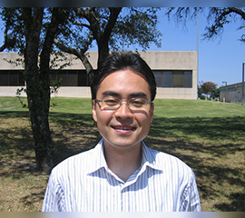
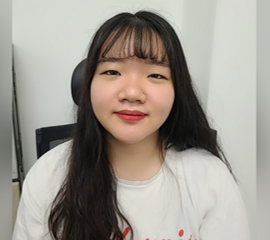

Home

Wooil Kim
Ph.D.
IMPRESS LAB
Department of Computer Science & Engineering
Incheon National University, Incheon, Korea
wikim{at}inu.ac.kr
+82-32-835-8459
IMPRESS LAB
Department of Computer Science & Engineering
Incheon National University, Incheon, Korea
wikim{at}inu.ac.kr
+82-32-835-8459
Research Interests
- Speech Processing/Recognition - large vocabulary continuous speech recognition system
- Human Behavior Signal Processing - in-vehicle human interface, robust speech recognition for in-vehicle system
- Information Retrieval System - multimedia/music information retrieval, spoken document retrieval (SpeechFind)
- Statistical Signal Processing, Pattern Recognition, Neural Network
- environmental robust processing for ASR, missing-feature theory
- human emotion processing, signal processing/estimation under cognitive stress/distraction
- keyword spotting/detection, data mining, dialog system
Education and Experiences
- Experiences Associate Professor, CSE, University of Incheon, Korea, Oct.2016-Present
- Education Ph.D., Electronics Engineering, Korea University, Seoul, Korea, Aug. 2003
Assistant Professor, CSE, University of Incheon, Korea, Aug.2012-Sept.2016
Research Assistant Professor, EE, University of Texas at Dallas, Sept.2007-Aug.2012
Research Associate, EE, University of Texas at Dallas, Sept.2005-Aug.2007
-Supervised by Prof. John H. L. Hansen
Post-doctoral Researcher, ECE, Carnegie Mellon University, Sept.2004-Aug.2005
-KOSEF program, supervised by Prof. Richard M. Stern
Post-doctoral Researcher, EE, Korea University, Sept.2003-Aug.2004
-BK21 program, supervised by Prof. Hanseok Ko
-Thesis: Model-based Feature Compensation for Robust Speech Recognition in Adverse Environments [link]
-Advised by Prof. Hanseok Ko
M.S., Electronics Engineering, Korea University, Seoul, Korea, Aug. 1998
-Thesis: Spectral Subtraction based on Phonemic and Auditory Properties [link]
-Advised by Prof. Hanseok Ko
B.S., Electronics Engineering, Korea University, Seoul, Korea, Feb. 1996
Publications
- Journal Papers
- Conference Papers (Peer-Reviewed)
- Book Chapters
- Etc.
Ara Bae
Graduate student
IMPRESS LAB
Department of Computer Science & Engineering
Incheon National University, Incheon, Korea
arbae{at}inu.ac.kr
+82-32-835-8452
IMPRESS LAB
Department of Computer Science & Engineering
Incheon National University, Incheon, Korea
arbae{at}inu.ac.kr
+82-32-835-8452
Research Interests
- Speech Processing/Recognition - large vocabulary continuous speech recognition system
- Human Behavior Signal Processing - in-vehicle human interface, robust speech recognition for in-vehicle system
- Information Retrieval System - multimedia/music information retrieval, spoken document retrieval (SpeechFind)
- Statistical Signal Processing, Pattern Recognition, Neural Network
- environmental robust processing for ASR, missing-feature theory
- human emotion processing, signal processing/estimation under cognitive stress/distraction
- keyword spotting/detection, data mining, dialog system

Jaehee Jung
UnderGraduate student
IMPRESS LAB
Department of Computer Science & Engineering
Incheon National University, Incheon, Korea
arbae{at}inu.ac.kr
+82-32-835-8452
IMPRESS LAB
Department of Computer Science & Engineering
Incheon National University, Incheon, Korea
arbae{at}inu.ac.kr
+82-32-835-8452
Research Interests
- Speech Processing/Recognition - large vocabulary continuous speech recognition system
- Human Behavior Signal Processing - in-vehicle human interface, robust speech recognition for in-vehicle system
- Information Retrieval System - multimedia/music information retrieval, spoken document retrieval (SpeechFind)
- Statistical Signal Processing, Pattern Recognition, Neural Network
- environmental robust processing for ASR, missing-feature theory
- human emotion processing, signal processing/estimation under cognitive stress/distraction
- keyword spotting/detection, data mining, dialog system
Contact us
Sure...We can take some time for chatRoom 07-506/526, impress.inu.ac.kr
wikim{at}inu.ac.kr, +82-32-835-8452
Dept. of Computer Science and Engineering
Incheon National University
119 Academy-ro (Songdo-dong), Yeonsu-gu, Incheon, Korea